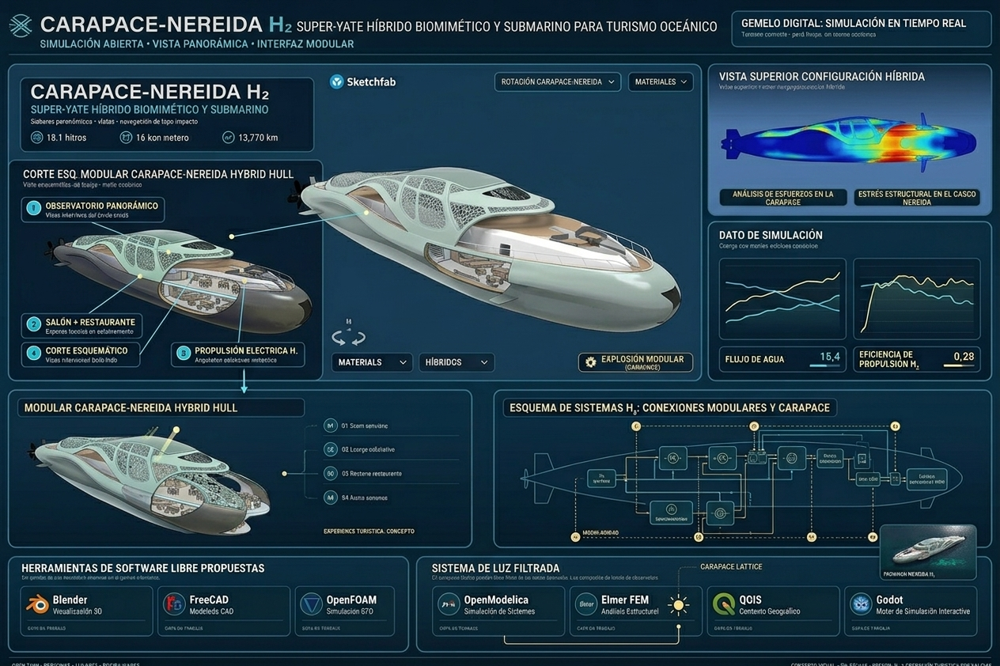

FUSIÓN CONCEPTUAL · TURISMO OCEÁNICO
CARAPACE–NEREIDA H₂
Una propuesta que combina el casco biomimético modular de Carapace con los espacios panorámicos y submarinos de Nereida en un superyate híbrido de exploración oceánica.

FUSIÓN CONCEPTUAL · TURISMO OCEÁNICO
Una propuesta que combina el casco biomimético modular de Carapace con los espacios panorámicos y submarinos de Nereida en un superyate híbrido de exploración oceánica.
